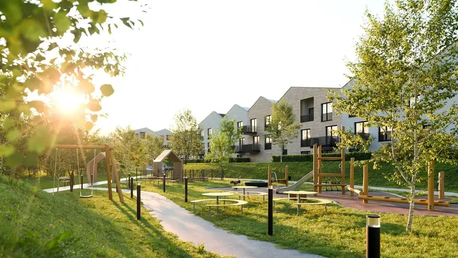
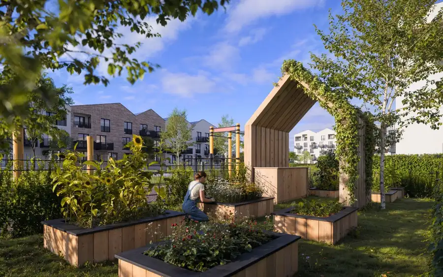
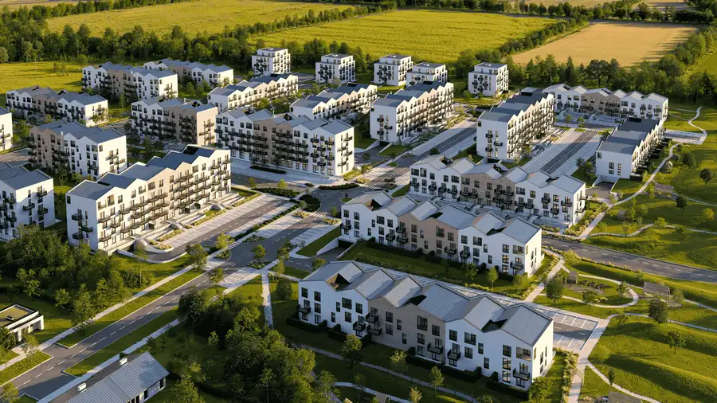

4- izbový byt – výnimočné bývanie so strešnou terasou
Galanta
- Dispozícia4-izbový
- Plocha119.43 m²
- Poschodie6. z 6
- StavDeveloperský projekt
- Energetická triedaA
O nehnuteľnosti
PÚPAVA DEVELOPMENT ponúka na predaj len 2 exkluzívne 4-izbové byty v projekte púpavy Galanta. Priestranné interiéry a strešná terasa vytvárajú bývanie, ktoré ponúka viac súkromia, komfortu aj priestoru na oddych. Výmera bytu 119,43 m2, výmera loggie 5,28m² a výmera terasy 116,76 m2 a ponúka dostatok priestoru na vytvorenie domova podľa vlastných predstáv. Strešná terasa navyše prináša vlastný exteriér s priestorom na rannú kávu, večerné posedenie, či chvíle s rodinou. Súčasťou štandardu je: - stropné kúrenie a chladenie,- balkón alebo lodžia,- predpríprava na exteriérové žalúzie,- moderné podlahy, dvere, obklady, dlažby a sanita. Komfort navyše: - parkovacie miesto, - pivničná kobka. Každý byt disponuje balkónom alebo loggiou, ktoré ponúkajú príjemný priestor na oddych a chvíle strávené vonku. Okolie dopĺňa oddychová zóna a detské ihrisko, ktoré vytvárajú príjemné prostredie pre každodenný život. Parkovanie je možné na krytom parkovacom mieste alebo na vonkajších parkovacích státiach. Výstavba sa začne na jeseň 2026, pričom kolaudácia je plánovaná na rok 2029.Web projektu:https://pupavygalanta.sk/Kontakt na predajcov:Zuzana Solčanskámobil: +421 905 200 322mail: solcanska@pupava.comLucia Novákmobil: +421 910 308 281mail: novak@pupava.comMartin Štetiar mobil: +421 915 577 410mail: stetiar@pupava.com
Parametre
| Cena vrátane energií | Nie |
|---|---|
| Druh | 4 izbový byt |
| Dátum zverejnenia | 6. 10. 2026 |
| Energetický certifikát budovy | A |
| Podlažie | 6 |
| Počet lodžií | 1 |
| Počet nadzemných podlaží | 6 |
| Počet vonkajších parkovacích miest | 2 |
| Rok kolaudácie | 2029 |
| Rok výstavby | 2027 |
| Stav nehnuteľnosti | Developerský projekt |
| Telekomunikácie | Optická sieť |
| Terás | 1 |
| Typ | Predaj |
| Typ konštrukcie | Zmiešaná, Železobetónová |
| Vybavenie | Terasa, Lodžia, Vonkajšie parkovacie miesto |
| Vykurovanie | Tepelné čerpadlo, Rekuperácia |
| Úžitková plocha | 119.43 m² |
Kde to je


Mohlo by Vás zaujímať

BytNové8 285 300 €4-izbový byt – veľkorysý priestor pre náročných, prémiový štandard v cene (87,74 m²–89,59 m²) Bernolákovo 4-izbový87.74 m²3. podlažie Najväčšie byty v projekte púpavy Bernolák sú určené pre tých, ktorí hľadajú priestor, svetlo a nadštandardný komfort.4-izbové byty s výmerou od 87,74…
BytNové10 221 397 €3-izbový byt – komfort pre rodiny, veľkorysé presvetlenie a prémiový štandard (66–69,52 m²) Bernolákovo 3-izbový69.51 m²1. podlažie 3-izbové byty v projekte púpavy Bernolák sú ideálne pre rodiny, ktoré hľadajú kvalitné bývanie v pokojnej lokalite s množstvom zelene.Výmera od 66 m²…
BytNové10 186 024 €2-izbový byt – ideálny pre páry, dizajnové riešenia v štandarde a presvetlené priestory (45 m²–47,59 m²) Bernolákovo 2-izbový47.59 m²2. podlažie Ak hľadáte komfortné bývanie s moderným štandardom, 2-izbové byty v projekte púpavy Bernolák ponúkajú skvelú kombináciu funkčnosti a príjemného…